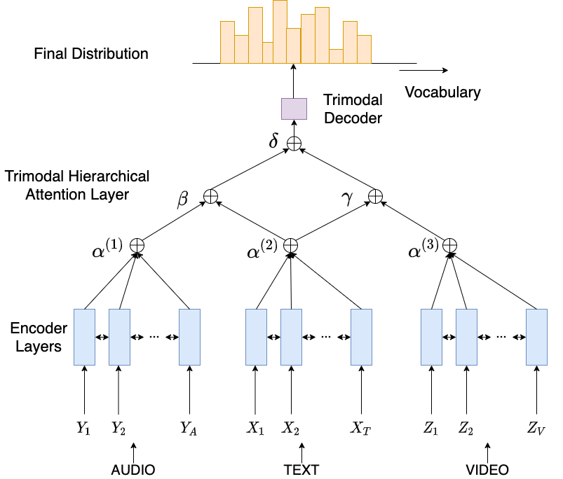
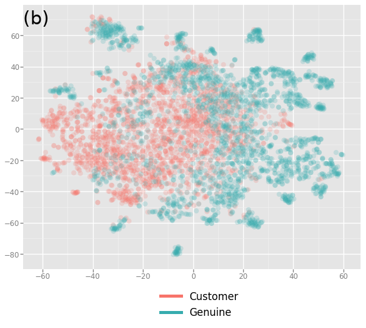
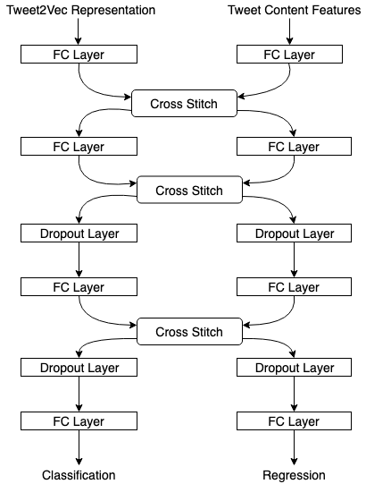
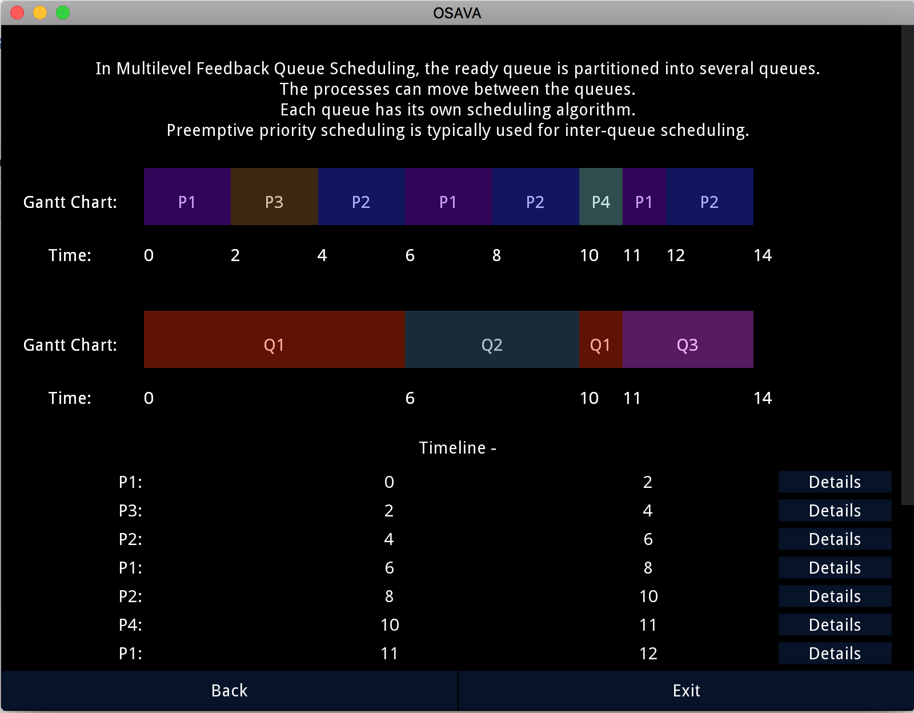
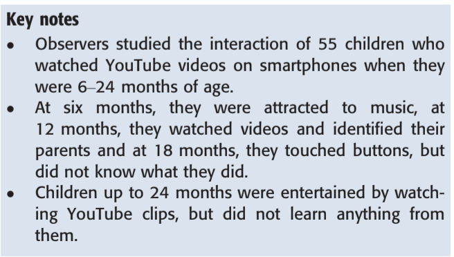

|
Udit Arora
I am a masters student in Computer Science at Courant Institute of Mathematical Sciences, New York University, where I am pursuing research and coursework related to Computer Vision, Natural Language Processing and Machine Learning.
Prior to this, I worked as a Research Engineer at Product Labs, IIIT Hyderabad, where I worked on applying research in the domain of object detection/tracking, document querying and speech processing to develop commercially viable products. I also worked as a Research Associate at Laboratory for Computational Social Systems, IIIT Delhi, where I worked on research problems in the domain of blackmarket-driven social media fraud and multimodal text summarization.
I completed my bachelors in Computer Engineering from NSIT, University of Delhi, following which I worked at Microsoft as a Software Engineer in the Office Product Group, where I worked on products like Excel, Kaizala and Skype for Business.
Email /
CV /
Google Scholar /
Github /
LinkedIn /
Flashy Website
|
|
|
Research
I'm interested in computer vision, natural language processing, data mining and multimodal learning. My research interests are centered around developing intelligent systems that can solve impactful problems..
|
|

|
MAST: Multimodal abstractive summarization with trimodal hierarchical attention
Aman Khullar*,
Udit Arora*
EMNLP Workshop on NLP Beyond Text, 2020
Old Code (new version will be posted soon)
Multimodal summarization by utilizing information from all three modalities of a video and trimodal hierarchical attention.
(* = equal contribution)
|
|

|
Analyzing and Detecting Collusive Users Involved in Blackmarket Retweeting Activities
Udit Arora,
Hridoy Sankar Dutta,
Brihi Joshi,
Aditya Chetan,
Tanmoy Chakraborty
ACM Transactions on Intelligent Systems and Technology (TIST), 2020
PDF |
Code and dataset
Detection of users involved in blackmarket-driven retweeting activities on Twitter using a multiview learning based approach to encapsulate different views of information about the users.
|
|

|
Multitask Learning for Blackmarket Tweet Detection
Udit Arora,
William Scott Paka,
Tanmoy Chakraborty
2019 IEEE/ACM International Conference on Advances in Social Networks Analysis and Mining (ASONAM ’19), 2019
Detection of tweets posted on blackmarket services to gain inorganic appraisals - using a multitask learning based framework.
|
|

|
OSAVA: An Android App for Teaching a Course on Operating Systems
Pinaki Chakraborty*,
Udit Arora*,
Namrata Mukhija, et. al.
Journal of Enginering Education Transformations (JEET), 2019
Code
An Android app named Operating System Algorithms Visualization App (OSAVA) to visualize different types of algorithms used in operating systems. It was used to teach a course on operating systems.
|
|

|
Children aged 6-24 months like to watch YouTube videos but could not learn anything from them
Savita Yadav,
Pinaki Chakraborty,
Prabhat Mittal,
Udit Arora
Acta Paediatrica, 2018
Parents sometimes show young children YouTube videos on their smartphones. We studied the interaction of 55 Indian children born between December 2014 and May 2015 who watched YouTube videos when they were 6–24 months old.
|
|
{kind=link}